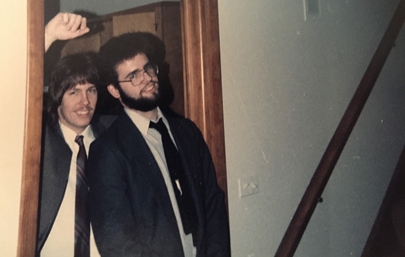

Playing Together
Todd was encouraging initially, once bemoaning the fact that I didn't play an instrument because, he claimed, my instincts would make me a "monster." And he showed me how to cop riffs from LPs, tapes, and CDs—which has comprised the bulk of my subsequent training. He first taught me Michael Anthony's straightforward part for Van Halen's "Ain't Talkin' About Love," then Sting's line from the Police's "Can't Stand Losing You."
He also showed me the proper hand position that keeps the thumb perpendicular to the neck and parallel to the other fingers, one per fret, on the fret board. He told me always to know where I am in the song and to pay close attention to what the other musicians were doing. He insisted that I listen—always closely.
But I tend to romanticize Todd's role in my musical life; the truth is, once I started finding my way across the strings with a little more confidence, and once I returned to the University of Illinois for my sophomore year, I didn't learn as much from him. When we would jam in my bedroom at my parents' place, over holiday breaks or on summer afternoons—him on his Gibson Paul, me still on my Squire—it rarely amounted to more than my giving him a platform to demonstrate his virtuosity through his lengthy solos.
At the time, I didn't understand what the problem was. I didn't understand what a groove is—that it develops from the space created between the players. Later, I would hear James Brown's "Super Bad" and discover that the groove emerges not from the rhythm section alone but from the interplay of the drummer, bassist, and other players paying close attention to each other.
It became clear once I started graduate school in Tennessee that my interests and accomplishments couldn't be of interest to him, at least for very long. When I told him about a great gig with the Mystery Dates, the insurgent country band I was in at the time, he'd respond with, "Why do you always find the good musicians to play with?"